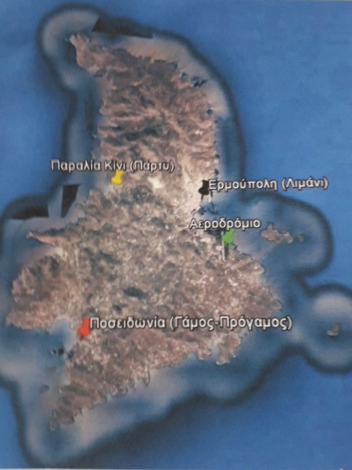

Και για να μη χαθείτε, παρακάτω υπάρχει χάρτης με τις σημαντικές τοποθεσίες για το γάμο.
Επίσης, για αυτούς που θα έχουν μεγάλη άδεια και θέλουν να εξερευνήσουν τις ομορφιές της Σύρου, παραθέτουμε μερικές από τις προσωπικές μας προτιμήσεις.
- Vaporia in Ermoupolis is one of the most picturesque areas in Syros.
The all day seaside bar Ciel in an ideal location for you to enjoy the sea, as well as a drink at night.
- For a swim outside Ermoupolis, our personal favourite is Delfini, one of the most beautiful beaches in Syros.
- Ono beach bar in Agathopes beach, is a modern space where you can enjoy during the day and nighttime.
για κρασί το βράδυ.
- Le Perroquet Tranquille is a beautiful bistrot in Posidonia, with great food and coffee.
- Don't forget to take a stroll in the picturesque alleys of Ano Syros and Ermoupolis...
- ...and don't forget to eat italian food at Amvix or ice cream at Didadi
In case you'd like torent a car we have contacted the following agencies in order to establish a discount for one or more days:
